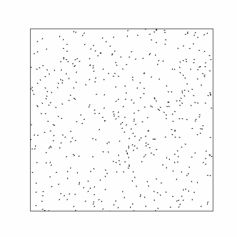

HPC-Project documentation master file, created by sphinx-quickstart on Sun Mar 3 13:07:15 2024. You can adapt this file completely to your liking, but it should at least contain the root toctree directive.
Welcome to HPC-Project’s documentation!
- Background:
The scope of this project is to simulate an active matter i.e., swarming, such as a flock of birds relying on the so-called Viscek model. This model consists of N moving particles at the same speed (v0), whose angle ui represents the direction of their move. When the particles interact with each other within a certain radius (R), are forced to change direction. The position (r_i) of its particle i is updated though the equations:
By changing the simulation parameters, different flocking patterns are created. The simulation code finds the mean angle of neighbors particles within a radius R and updates their direction based on this calculation.
Objectives
Analyze, understand and describe a complex computational problem
Perform initial measurements to the given problem in terms of timing analysis and memory performance
Apply different optimization algorithms that could enhance the efficiency of the computations
Compare the initial program with the optimized one in the same terms
Extend the problem in 3D and compare the new performance results
Code
You can find the code you will analyze and optimize at https://github.com/pmocz/activematter-python. You can find the repository of our optimized code at …